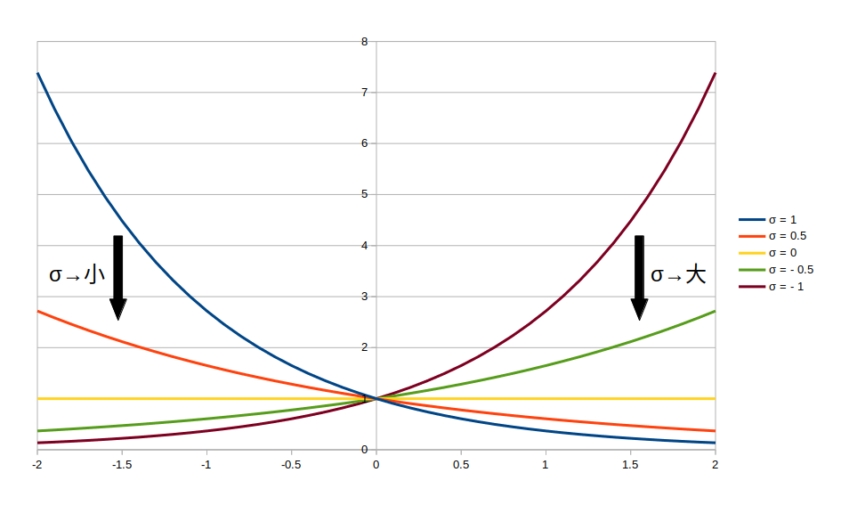
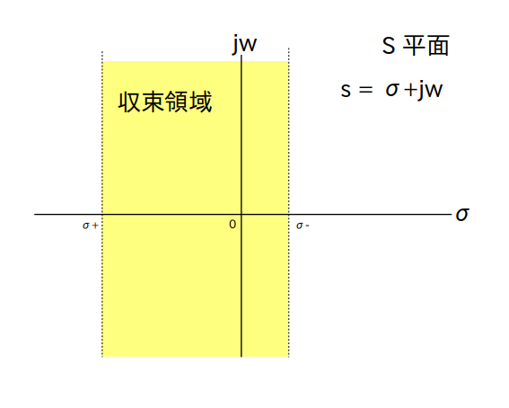
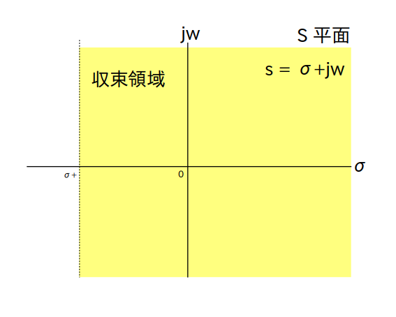
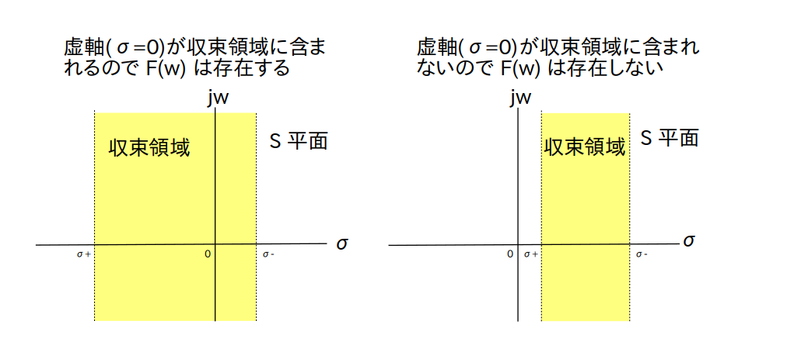
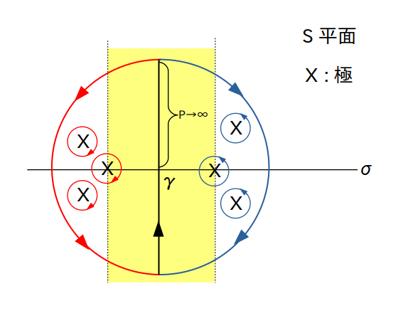

このページではラプラス変換とフーリエ変換の関係について述べます。
また説明中に前ページで出てきた「S平面」「複素角周波数」「収束領域」などの意味についても述べます。
まずフーリエ変換は下の式で定義でされる複素関数でした。
\[ \textrm{F}(w) = \int_{-\infty}^{\infty} \left \{ f(t) \cdot \textrm{e}^{\{-j \cdot w \cdot t \}} \right \} \textrm{d}t \]フーリエ変換さえあれば別に無理してラプラス変換を使う必要はないという気がしますが、$f(t)$ がフーリエ変換可能であるための十分条件である
(1) $f(t)$ は区間的に連続
(2) 絶対可積分条件 \[ \int_{-\infty}^{\infty} |f(t)| \textrm{d}t < \infty \]は結構厳しい制約(特に絶対可積分条件)で、ほとんどの信号は絶対可積分条件を満たさずフーリエ変換することが出来ません。
※ 例えば $f(t)=1$ ですらフーリエ変換不可能です。ただしデルタ関数とか三角関数みたいに超関数を用いることでフーリエ変換が存在する場合もあります。
そこで $f(t)$ をそのままフーリエ変換することを諦め、$\sigma$ をある実数としたとき
\[ f(t) \cdot \textrm{e}^{-\sigma t} \]
を代わりにフーリエ変換することにします。
ここで $\textrm{e}^{-\sigma t}$ は $\sigma$ の値によって以下のような変化をしますので、上手く $\sigma$ を決めてあげれば $f(t) \cdot \textrm{e}^{-\sigma t}$ が $t \rightarrow \pm \infty$ の時に 0 に収束する、つまり絶対可積分条件を満たすことが出来そうです。

具体的には、$t \geq 0$ の範囲ではある実数 $\sigma_+$ に対して $\sigma_+ < \sigma$ を満たす $\sigma$ を選んであげると $f(t) \cdot \textrm{e}^{-\sigma t} \rightarrow 0\ ,\ (t \rightarrow \infty) $ と出来そうです。
同様に $t < 0$ の範囲ではある実数 $\sigma_-$ に対して $\sigma < \sigma_-$ を満たす $\sigma$ を選んであげると $f(t) \cdot \textrm{e}^{-\sigma t} \rightarrow 0\ ,\ (t \rightarrow -\infty)$ と出来そうです。
この $\sigma_+$ や $\sigma_-$ のことを「収束座標」(abscissa of absolute convergence)と呼び
\[ \sigma_+ < \sigma < \sigma_- \]の範囲から適当に $\sigma$ を選べば
\[ f(t) \cdot \textrm{e}^{-\sigma t} \rightarrow 0\ ,\ (t \rightarrow \pm \infty) \]となるので両側フーリエ変換可能になります。
ただし、$f(t)$ によっては $\sigma_+ > \sigma_-$ となって適切な $\sigma$ を選べない場合があります。
例えば $f(t)=1$ の場合は $\sigma_+ = \sigma_- = 0$ なので適切な $\sigma$ を選べないためフーリエ変換を行うことが出来ません。
そういう場合は $t<0$ 側を切り捨てて
をフーリエ変換することにすると $\sigma_+ < \sigma$ の範囲だけで $\sigma$ を選べるようになりますのでフーリエ変換可能になります。
なおこれは最終的に片側ラプラス変換をすることに相当します。
また、どうあがいてもフーリエ変換出来ない $f(t)$ も存在します。
※ 例えば前のページで例に挙げた $1/t$ や tan など。ただ tan は超関数を使えば出来るみたいな話をどこかで見かけた様な気がします。
とりあえずここでは都合よく $\sigma_+$ と $\sigma_-$ が見つかり、$\sigma_+ < \sigma < \sigma_-$ の範囲で適当に $\sigma$ を選んでフーリエ変換することにします。
すると $\sigma$ は変数になるので、フーリエ変換は $\sigma$ と $w$ に関する複素関数
となります。
ただ、このままだと非常に見辛いので $\textrm{e}$ の項をまとめ、 \[ s = \sigma + j \cdot w \]
という複素数の変数 $s$ を定義して置き換えます。
この $s$ を「複素角周波数」(complex frequency)と呼び、$s$ が定義されている複素平面のことを「S 平面」(S-plane)と言います。
するとフーリエ変換は複素角周波数 $s$ に関する複素関数
\[ \textrm{F}(s) = \int_{-\infty}^{\infty} \left \{ f(t) \cdot \textrm{e}^{\{-s \cdot t \}} \right \} \textrm{d}t \]
になります。
これが両側ラプラス変換です。
なお上で書いたように $\sigma_+ > \sigma_-$ となる場合は
\[ \begin{cases} f(t) \cdot \textrm{e}^{-\sigma \cdot t} &, (t \geq 0) \\[10pt] 0 &, (t < 0) \\[10pt] \end{cases} \]
をフーリエ変換することになります。
この場合は片側ラプラス変換
を実施していることに相当します。
さて両側ラプラス変換が存在するため条件 $\sigma_+ < \sigma < \sigma_-$ についてもう少し詳しく見てみましょう。
変数 $s = \sigma + j \cdot w$ はこの範囲に含まれるS平面内の領域から選ばないと $\textrm{F}(s)$ が発散します。
この範囲を「収束領域」(ROC: Region Of Convergence)と呼びます。
収束領域をS平面で表したのが下の図2です。
※ 直線 $\sigma = \sigma_+$ と $\sigma = \sigma_-$ の上は収束領域に含まれないので注意

また片側ラプラス変換の収束領域 $\sigma_+ < \sigma$ は以下の図3 になります。
こちらは良く教科書等で見かける図です。
※ 直線 $\sigma = \sigma_+$ の上は収束領域に含まれないので注意
今度はラプラス変換からフーリエ変換を導出する方法について説明します。
と言っても話は簡単で、ラプラス変換 $\textrm{F}(s)$ が手に入った時に $\sigma = 0$ を $s$ に代入する、つまり
\[ s =j \cdot w \]を $\textrm{F}(s)$ に代入するだけでフーリエ変換 $\textrm{F}(w)$ が得られます。
ただし虚軸(直線 $\sigma = 0$) が収束領域に含まれてない場合は $\textrm{F}(w)$ が存在しない事に注意が必要です(図4)。

ではここで一旦話をまとめます。
区間的に連続的な信号 $f(t)$ に対して $\sigma_+ < \sigma < \sigma_-$ の範囲で $f(t) \cdot \textrm{e}^{-\sigma t} \rightarrow 0\ ,\ (t \rightarrow \pm \infty)$ となる収束座標 $\sigma_+$ と $\sigma_-$ が存在するならば、$f(t) \cdot \textrm{e}^{-\sigma \cdot t}$ をフーリエ変換することで $f(t)$ のラプラス変換 $\textrm{F}(s)$ が求められる。
逆に、虚軸(直線 $\sigma = 0$) が収束領域に含まれているならば、 $s = j \cdot w$ をラプラス変換 $\textrm{F}(s)$ に代入することで $f(t)$ のフーリエ変換 $\textrm{F}(w)$ が求められる。
逆フーリエ変換は次の式です。
\begin{align*} f(t) = \frac{1}{2\pi} \int_{-\infty}^{\infty} \left \{ \textrm{F}(w) \cdot \textrm{e}^{\{j \cdot w \cdot t \}} \right \} \textrm{d}w \end{align*}
逆ラプラス変換も(1)と同じ様な議論で求まります。
つまり
$ w = s/j$ と置き換えて代入すれば $\textrm{d}w = \textrm{d}s/j$ なので、すぐに
となります。
ただし $f(\sigma,t)$ は $t$ だけでなく $\sigma$ にも関する時間領域信号となりますので、この時点では必ずしも元の信号 $f(t)$ へ一意に復元出来ないことに注意してください(前のページで説明したように、逆ラプラス変換は収束領域の取り方によって復元される原関数が変わります)。
また積分路は線分 $(\sigma - j \cdot \infty\ ,\ \sigma + j \cdot \infty)$ となります。
よって次は元の $f(t)$ へ一意に復元出来る $\sigma$の範囲を探します。
そのためにまず適当に実数の値 $\gamma$ を選んで変数 $\sigma$ に代入します。
さらに留数定理を使いたいので積分路を半径 $p (\rightarrow \infty)$ の半円 x2 になるように変更します。
なお前ページで「$\textrm{F}(s)$ は有理式で表すことが出来、かつ分母の多項式の次数が分子の多項式の次数よりも大きいとする」と仮定したので
が成り立ちますから、ジョルダンの補題により左右の半円部分の積分は 0 になります。
すると、もし $\gamma$ が元の $f(t)$ のラプラス変換を計算する際に求められた収束領域の範囲内にあれば、 $\gamma$ の値によらず元の $f(t)$ へ一意に復元されます(図5)。
元の信号 $f(t)$ の $t \geq 0$ 側の極は収束領域(黄色の範囲)の左側、$f(t)$ の $t < 0$ 側の極は収束領域の右側にある。
つまり半径 $p$ の赤い半円が $f(t)$ の $t \geq 0$ 側に対応する積分路、半径 $p$ の青い半円が $f(t)$ の $t < 0$ 側に対応する積分路となる。
よって $p$ を充分大きく取れば収束領域内で任意に $\gamma$ の値を選んでも赤と青の半円内に含まれる極の組み合わせは常に同じとなる → $f(t)$ へ一意に復元される。
以上より逆ラプラス変換
\begin{align*} f(t) = \frac{1}{2\pi\cdot j} \lim_{p \rightarrow \infty} \int_{\gamma-j\cdot p}^{\gamma+j\cdot p} \left \{ \textrm{F}(s) \cdot \textrm{e}^{\{s \cdot t \}} \right \} \textrm{d}s \end{align*}(ここで $\gamma$ は収束領域内の任意の値) が導出されます。
逆ラプラス変換から逆フーリエ変換を導くのは簡単で、$\gamma=0$、$s =j \cdot w$ 、 $\textrm{d}s = j \cdot \textrm{d}w$ を逆ラプラス変換の式に代入するとそのまま逆フーリエ変換の式が導出されます。
ただし(1)でも述べましたが虚軸(直線 $\sigma = 0$) が収束領域に含まれてない場合は $\textrm{F}(w)$ が存在しないので逆フーリエ変換も計算できません。
話をまとめると次のようになります。
$w = s/j$ 、 $\textrm{d}w = \textrm{d}s/j$ を逆フーリエ変換の式に代入して積分路を上手く調整すると逆ラプラス変換が求められる。
逆に、虚軸(直線 $\sigma = 0$) が収束領域に含まれているならば、 $\gamma=0$、$s =j \cdot w$ 、 $\textrm{d}s = j \cdot \textrm{d}w$ を逆ラプラス変換の式に代入することで $f(t)$ の逆フーリエ変換の式が求められる。